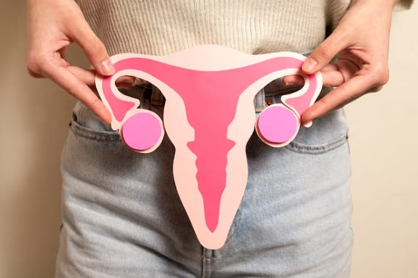

Artikel Sehat |
|||
|  | |||
Bagaimana Menjaga Kesehatan Organ Reproduksi Wanita Yang Benar |
3 Cara Efektif Menjaga Kesehatan Mental pada Remaja |
10 Cara Menjaga Kesehatan Mata |
Menjaga Kesehatan Kulit dengan Perawatan yang Benar Tiap Hari |
Ada beberapa bagian vital pada tubuh wanita yang sangat penting untuk dijaga kesehatannya, salah satunya adalah organ reproduksi wanita. |
“Menjaga kesehatan mental remaja sangat penting diupayakan oleh orang tua, karena berpengaruh pada mentalitas mereka di kemudian hari. Salah satu caranya yaitu menyediakan waktu untuk mendukung anak." |
Mata merupakan indera penglihatan yang berfungsi penting dalam menjalani aktivitas sehari-hari. Oleh karenanya, menjaga mata supaya tetap sehat sangat diperlukan. Inilah 10 cara menjaga kesehatan mata!
|
Kulit sehat tidak datang dengan sendirinya. Untuk mendapatkannya, Anda harus menjaga kesehatan kulit dengan mengonsumsi makanan bergizi maupun menggunakan produk-produk perawatan kulit. |